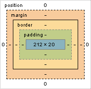

Блочная модель документа
Типы элементов
Блочные теги: p, h1, h2, ul, div etc.
Строчные теги: a, strong, em, span etc.
Внутренние отступы, свойство padding
Свойство padding задает внутренние отступы элемента — отступы от внешней границы элемента до его содержания. Эти отступы еще иногда называют полями. Существует несколько способов записи свойства padding.
padding: 10px;
padding: 5px 10px;
padding: 5px 10px 15px;
padding: 5px 10px 15px 20px;
1. Одинаковые отступы со всех сторон.
2. Отступы сверху и снизу 5px, справа и слева 10px.
3. Отступ сверху 5px, слева и справа 10px, снизу 15px.
4. Разные отступы со всех сторон, в порядке верхний, правый, нижний, левый.
Также можно задавать отступы для разных сторон с помощью свойств padding-left, padding-right, padding-top, padding-bottom. Для строчных элементов лучше не задавать вертикальных отступов, т.к. они ведут себя непредсказуемо.
Внешние отступы, свойство margin
Свойство margin задает внешние отступы элемента — отступы от внешней границы элемента до границ родительского элемента или до соседних элементов. Способы записи свойства margin аналогичны свойству padding.
margin: 10px;
margin: 5px 10px;
margin: 5px 10px 15px;
margin: 5px 10px 15px 20px;
1. Одинаковые отступы со всех сторон.
2. Сверху и снизу 5px, справа и слева 10px.
3. Сверху 5px, слева и справа 10px, снизу 15px.
4. Верхний, правый, нижний, левый отступы соответственно.
Можно задавать отступы для разных сторон с помощью свойств margin-left, margin-right, margin-top, margin-bottom.
Строчные элементы реагируют только на горизонтальные отступы.
Рамки
Рамка задаётся с помощью свойства border, которое состоит из трёх компонентов:
1. ширина рамки;
2. стиль рамки;
3. цвет.
Например:
selector{
border: 5px solid red;
}
Это правило задаёт красную сплошную рамку толщиной 5px. Задавать рамку можно одним свойством border, а можно и с помощью отдельных свойств border-width, border-style, border-color. Например:
selector{
border-width: 5px;
border-style: solid;
border-color: red;
}
Это правило задаёт такую же рамку, как и в примере выше. Несколько самых распространенных стилей рамок:
solid — сплошная;
dashed — пунктирная;
dotted — точками.
Рамку можно задавать и строчным, и блочным элементам.
Стандартная блочная модель
Стандартная блочная модель отвечает на основной вопрос. Сколько же в итоге места будет занимать элемент?
Ответ следующий:
Область, занимаемая блочным элементом, складывается из его ширины и высоты содержания, внутренних и внешних отступов, ширины рамок .
Для строчных элементов есть свои особенности, которые мы опишем позже.
Схема блочной модели:

ширина/высота содержания — свойства width и height (синий прямоугольник на схеме);
внутренние отступы — свойство padding;
рамки — свойство border;
внешние отступы — свойство margin.
«Схлопывание» внешних отступов
Во второй части курса разберем некоторые важные тонкости блочной модели. И начнем с внешних отступов (или маргинов).
Вертикальный отступ между двумя соседними элементами равен максимальному отступу между ними. Если отступ одного элемента равен 20px, а второго 40px, то отступ между ними будет 40px.
Этот эффект называется эффектом «схлопывания» внешних отступов или «схлопывания» маргинов.
Горизонтальные отступы между элементами просто складываются. Например, горизонтальный отступ между двумя элементами с отступами 30px будет равен 60px.
«Выпадание» внешних отступов
«Выпадание» — это еще один эффект, связанный с вертикальными внешними отступами. Если внутри родительского блока расположить блок и задать ему отступ сверху, то внутренний блок прижмется к верхнему краю родительского, а у родительского элемента появится отступ сверху. Т.е. верхний отступ внутреннего элемента «выпадает» из родительского элемента.
Если у родительского элемента тоже был задан внешний отступ, то выберется максимальный отступ между собственным и «выпавшим» .
Чтобы избавиться от эффекта выпадания, можно задать родительскому элементу внутренний отступ (паддинг) сверху или добавить рамку сверху.
Внешние и внутренние отступы всегда складываются.
Как отцентровать элемент?
Чтобы отцентровать блочный элемент, нужно выполнить следующие действия:
1. Задать элементу ширину, которая меньше ширины родительского контейнера.
2. Задать для внешних отступов справа и слева значение auto.
Примеры кода:
selector{
width:100px;
margin:0 auto;
}
selector{
width:100px;
margin-left:auto;
margin-right:auto;
}
Изменяем блочную модель, свойство box-sizing
Проблему с шириной тянущихся полей решить сложно. Идеальным вариантом было бы изменение алгоритма расчета ширины элемента, чтобы свойство width задавало не ширину содержания, а общую ширину.
К счастью, такая возможность была добавлена в CSS3 с помощью свойства box-sizing, которое уже поддерживается большинством современных браузеров.
Это свойство имеет два значения:
1. content-box — значение по умолчанию, соответствует стандартной блочной модели.
2. border-box — изменяет режим расчета ширины элемента на описанный выше.
Данное свойство лучше задавать с использованием префиксов, т.к. оно достаточно новое:
-webkit-box-sizing: border-box; -moz-box-sizing: border-box; box-sizing: border-box;
Используйте свойство с префиксами, если у вас старый браузер.
Полезная статья про box-sizing на русском: Используйте свойство box-sizing
Управление типом элемента, свойство display
По умолчанию абзац является блочным элементом. А тэг <strong> строчным элементом.
Но это поведение можно изменить с помощью CSS.
Вообще для любого элемента.
display: inline-block
Иногда возникает необходимость расположить в ряд несколько элементов с заданными размерами. Строчные элементы для этого не подходят, т.к. не воспринимают размеры. Блочные элементы тоже не подходят, т.к. до и после них существует перенос строки. Конечно, блочные элементы можно приспособить для такой задачи, используя дополнительные свойства.
Но более простой способ — использовать блочно-строчные элементы. В HTML нет тэгов, которые по умолчанию вели бы себя как блочно-строчные, но любой элемент можно переключить в данный режим, задав ему свойство display со значением inline-block.
Особенности блочно-строчных элементов:
- им можно задавать размеры, рамки и отступы, как и блочным элементам;
- их ширина по умолчанию зависит от содержания, а не растягивается на всю ширину контейнера;
- они не порождают принудительных переносов строк, поэтому могут располагаться на одной строке, пока помещаются в родительский контейнер;
- элементы в одной строке выравниваются вертикально подобно строчным элементам.
display: table
Табличные сетки были очень популярны на заре веба. Действительно, у табличных сеток есть преимущества, которые очень сложно получить с помощью блоков. Например, столбцы одинаковой высоты.
Однако, семантически таблицы не предназначены для разметки сеток и постепенно от них отказались. Но память об их удобстве жила.
Позднее было разработано семейство значений свойства display, которое позволяет задать табличное поведение любым элементам.
Первое значение — display:table задает элементу тип таблица. Особенности табличных элементов:
1. можно задавать ширину, высоту, рамки, отступы;
2. по умолчанию ширина зависит от содержания;
3. переносы строки до и после элемента.
display: table-row
Любая таблица содержит элементы строка таблицы, внутри которых должны содержаться элементы ячейка таблицы. Соответствие тэгов таблицы значениям display:
<table> — display:table;
<tr> — display:table-row;
<td> — display:table-cell;
display: table-cell
С помощью значения table-cell свойства display можно задать элементу тип ячейка таблицы. Конечно, лучше чтобы элементы-ячейки находились внутри элементов-строк, которые находятся внутри элементов-таблиц.
Вы можете просто задать элементу тип ячейка таблицы, не добавляя вокруг него дополнительных элементов-строк и таблиц. В этом случае браузер создаст дополнительные анонимные элементы строки и таблицы.
Неудобство заключается в том, что вы не сможете ими управлять.
К таблицам, созданным с помощью CSS, можно применять те же свойства, что и к обычным таблицам. Например, задавать отступы между ячейками или режим схлопывания границ.display: none
Значение none свойства display используется очень часто. С его помощью можно скрыть элемент, как будто его и не было. Скрытый элемент не отображается и не занимает места на странице.
Данное свойство применяется при создании выпадающих меню, динамических галерей, переключающихся вкладок и много где еще.
Есть еще одно CSS-свойство, которое используется для сокрытия элементов. Это свойство visibility со значением hidden. Оно «прячет» элемент — он становится невидимым, но занимает место на странице.